Welcome To Sphynx Tennis Club
Sphynx Club is a tennis club in Southport and is affiliated to the LTA. The tennis club is situated on Ashdown Close, just off Scarisbrick New Road in Southport, and has excellent all-weather courts and modern facilities. We offer tennis for all ages and abilities, have comprehensive coaching programmes from our Head Coach, Chris Parkes, and are TennisMark accredited with the LTA.
2019 - Are you ready?......... Season begins in April...
The 2019 tennis season at Sphynx begins in April, with adult and junior S&D Tennis Leagues and Aegon County Leagues too. Are you ready?
Sphynx has 4 recently rejuvenated synthetic grass courts and a full competitive tennis programme.
Join now and and enjoy a great season of tennis at Sphynx and more!
New Adult Full Playing Member Discount Rate £98 (to be confirmed) (& no joining fee!)
Continuing for 2019 : Under 8's can join for FREE!
For more detail write to us at info@sphynxtennisclub.co.uk or call Head Coach, Chris on 07753 143 007.
2018 Season Report
Thanks to you all for another great year of tennis at Sphynx Tennis Club. Yet again, our teams have had success in both the Adult and Junior Southport and District Leagues. The Adult 1st team won the 1st Division for the 5th straight year and won the Christiana Hartley Cup competition. The Junior teams played in both U16 Boys and Under 14 Boys leagues and played well to come in Runners-Up and 3rd place respectively. The Sphynx U16 Boys team also came runner-up in the Lancashire County Aegon league Division 1 while Sphynx U14 Boys team came runner-up in the Lancashire County Aegon league Division 2. Sphynx U18 Boys came third in their Lancashire County Aegon League division 1 with all 3 teams retaining their places for next years county season. The standard of play and commitment from the players remains high, and my congratulations to all those involved.
The Sphynx AGM shall be on Sunday 9th December 2018, at 3:00pm at the clubhouse. A copy of last year's AGM minutes can be found on the notice board in the clubhouse. Hope to see you there.
Finally it just remains for me to thank the committee, coaches, team captains, players (adults and juniors) and all our members for your suport for the club and hope you have all enjoyed a great year of tennis at Sphynx.
Many Thanks, Doreen Bradley (Hon Secretary) - Nov 2018
2017 Season Report
Sphynx Adult 1st team win Southport & District Tennis Division 1 and are unbeaten all season in the league. Sphynx Men also finish top and unbeaten in the Aegon Team Tennis Lancashire Open Mens Division 1. Congratulations to all involved.
Sphynx Adult 2nd team are relegated from S&D Division 1 after promotion the previous year. Best of luck to all the 2nd team in Division 2 next season.
Sphynx Adult 3rd and 4th teams consolidate their positions in Division 4 and 7 after promotions in the previous seasons. Well done and best wishes for progress in 2018.
Sphynx U14 Boys win the S&D Junior League and are unbeaten in the season. The U12 Boys come 3rd in their league. Well played to all our junior players in the local leagues.
Sphynx U14 Boys also win their Aegon Lancashire Div 1 league, while Sphynx U16 Boys & U14 Girls & U18 boys come 2nd in all their Div 1 leagues. Strong performances across the county from all our junior players.
2016 - More Success for Sphynx....
A big thank you to all the Sphynx players who represented the club in 2016, and helped make it another fun, enjoyable and successful year. The awards, trophies and medals were presented at the Sphynx Christmas Party on 17th December, and a great night was had by all. Looking forward to next year already!
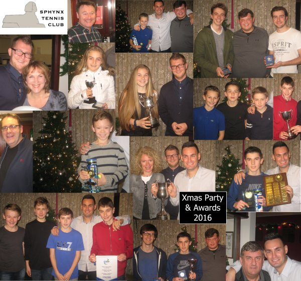
2015 - Another fantastic season for Sphynx
The 2015 tennis season at Sphynx is now finished, and the club celebrated all the team and player achievements at the Presentation Night on December 5th. Adult teams won 3 Southport and District league trophies including the coveted 1st Division, as well as 2 Cup competitions, the Joseph Lord trophy and the Christiana Hartley Trophy. Junior teams won 5 of the 8 S&D Junior Leagues, and an Aegon county title too. Sphynx players also perfomed well at the week-long S&D Junior Tournament, hosted at Sphynx in July. All the trophies were presented by head coach Chris Parkes, and members and their families enjoyed food and festive spirit in a great night to mark the end of 2015 season.
Many thanks to everyone for a fantistic night, and a fantastic season at Sphynx.
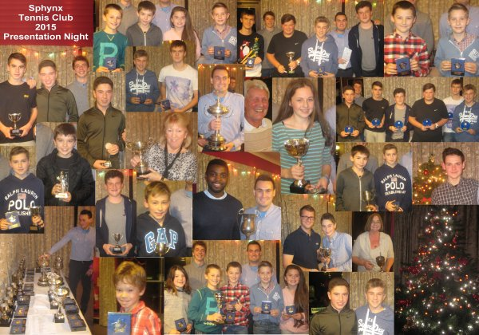
Sphynx collect 5 trophies at Southport & District Presentation night 2014
All 4 Sphynx adult teams won their respective division titles this year and the 1st team also won the prestigious Christiana Hartley for the second successive year. The trophies for all these events were presented to the club at this year's Southport & District Tennis Presentation Night at Campion Tennis Club on Thursday 16th October. The event was well attended by the local tennis community and capped off a great season in style. Well done to all the players and to head coach and first team captain, Chris Parkes.
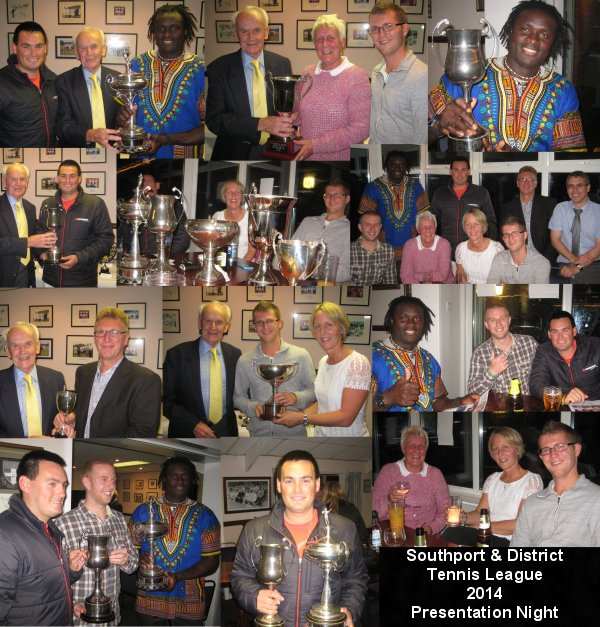
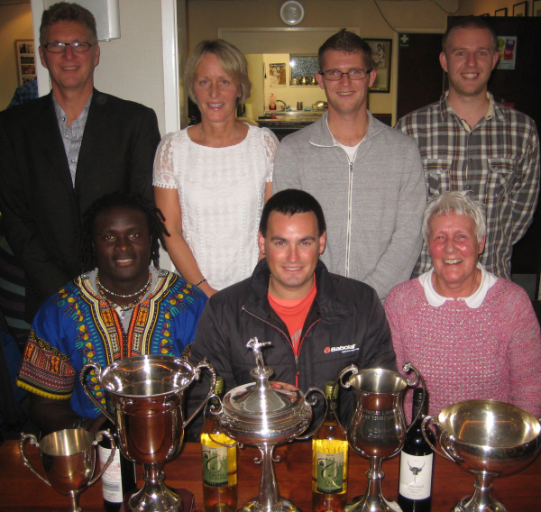Sphynx celebrate success in multiple league and cup events...
Sphynx have had another great tennis season and marked the success with a Club Photo on Friday 19th Septenber for all the players. On show were the Winners pendants from 5 Aegon leagues, for both junior and adult teams as well as other trophies from the Southport & District leagues. Well done to everyone involved and thank you for a all your hard work and dedication throughout the season.
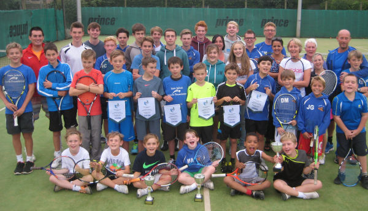
Winners of the U18s Aegon 1st Divison....
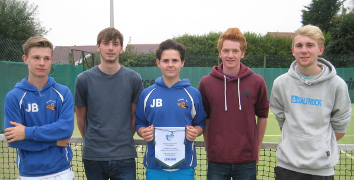
Winners of the U16s Southport & District Boys League
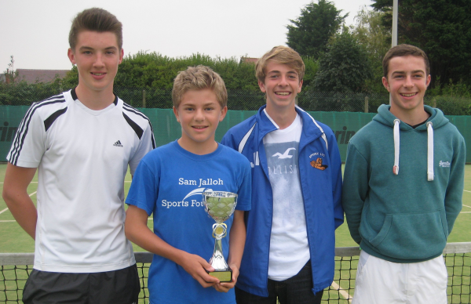
Sphynx host 2014 Southport & District Junior Tennis Tournament - Aug 18th to 23rd
Sphynx have hosted the 6-day Southport & District Junior Tournament this year. The event was well attended by junior players from all over the district, and around 250 matches were played from Under-9 through to Under-18 age groups.
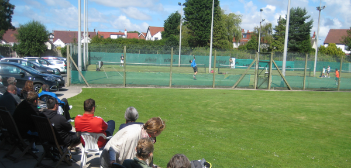
Finals day on 23rd August was well attended by spectators from all over the area and saw several Sphynx players in action. Sphynx Head Coach Chris Parkes organised the event and volunteers from the club helped prepare for the tournament and throughout the week with refreshments for all the players and spectators. Many thanks to everyone involved for a great week.
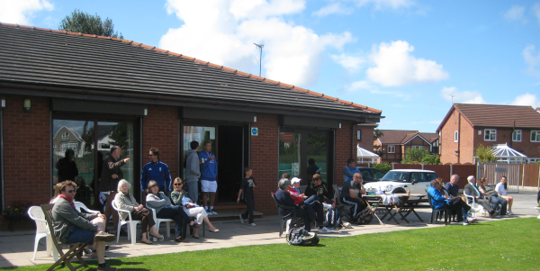
Sphynx win Christiana Hartley trophy for 2nd year in a row
Sphynx have won the prestigious Cristiana Hartley Trophy again, having won it last year for the first time since 1967. Sphynx Head Coach Chris Parkes led the team to a 3-2 victory against Formby HT on Wednesday 16th July at North Meols Tennis Club.
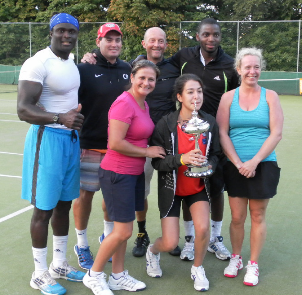
Sphynx Head Coach Chris Parkes collected the trophy from Barry Burns from the Southport & District League.
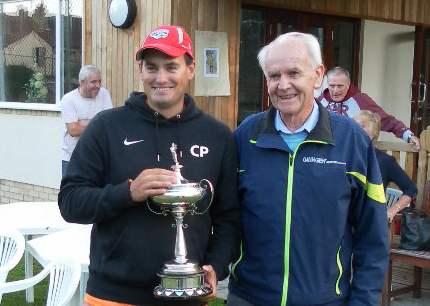
Sphynx win prestigious Cristiana Hartley Trophy 2013
Sphynx have won the prestigious Cristiana Hartley Trophy for only the first time since 1967. Sphynx Head Coach Chris Parkes led the team to a 3-2 victory against Birkdale Tennis Club on the evening of Thursday 18th July.
Coach Chris collects the trophy and thanks the team, the League and the hosts for a fantastic event.
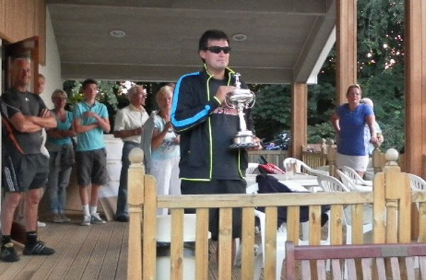
The competition pits the best teams in the Southport and District adult league against each other in a knock out tournament, culminating in the finals hosted by North Meols Tennis Club. The Sphynx Team gave an outstanding performance and are well deserved champions.
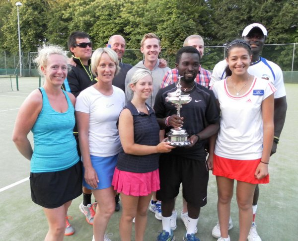
The team was cheered on by a strong show of support from Sphynx Club members, friends and family, and everyone joined in with the celebrations!
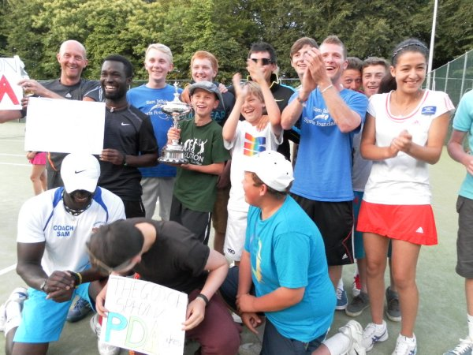
Sphynx win Lancashire LTA 2012 'Club of the Year'
At the end of a fantastic 2012 season for our Sphynx Junior teams, they were presented with the Aegon Division 1 U12, U14 and U16 county league titles at the Lancashire LTA Awards night in in November at the Reebok Stadium.
Sphynx was nominated for the prestigiuos Lancashire LTA 'Club of the Year' award up against the likes of Bolton and Wigan Tennis Centres. After the voting had been counted, the winner by a clear margin was Sphynx Tennis Club!
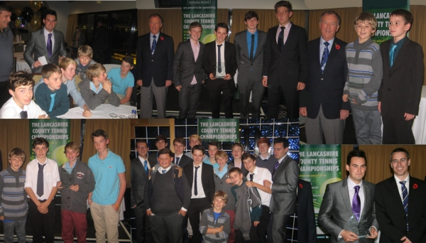
Sphynx Junior teams collecting their Aegon county league title awards for 2012 at the Reebok.
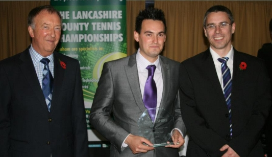
Sphynx Head Coach Chris Parkes and Sphynx Chairman Dave Clifford collecting the Lancashire LTA 2012 'Club of the Year' Award.
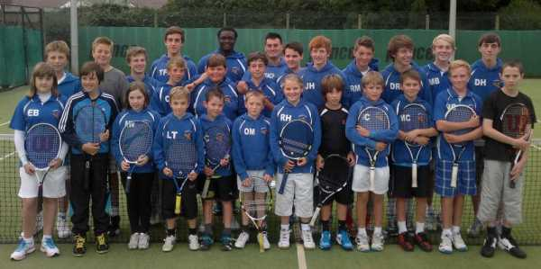
Sphynx Juniors ready for their coaching from Sphynx Head Coach Chris Parkes, and assistant coach Sammy Jalloh.